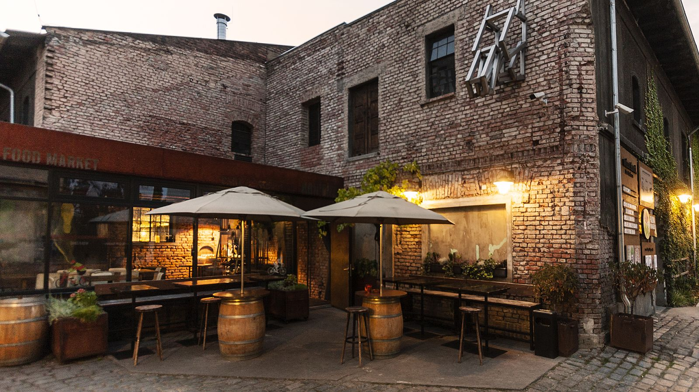
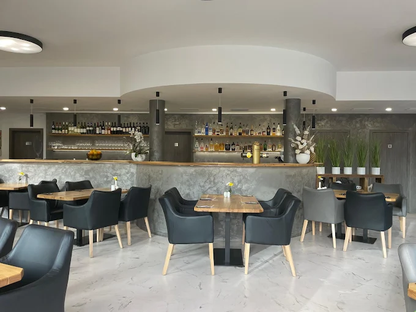

Trattoria Luna

O nás
Trattoria Luna je rodinná italská restaurace založená s láskou k tradiční kuchyni. Naše recepty vycházejí z originálních postupů předávaných po generace. Používáme pouze čerstvé a kvalitní suroviny. Každý den připravujeme domácí těstoviny. Naše pizzy pečeme v kamenné peci. Zakládáme si na přátelské atmosféře. Náš personál je vždy připraven vám poradit s výběrem. Nabízíme široký výběr italských vín. Prostor restaurace je útulný a elegantní. Chceme, aby se u nás každý cítil jako v Itálii.
Proč si vybrat nás
- ✔ Čerstvé suroviny každý den
- ✔ Autentické italské recepty
- ✔ Příjemná rodinná atmosféra
